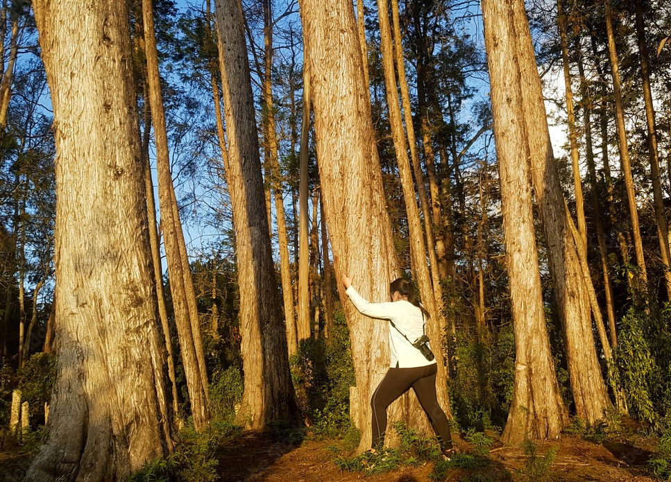
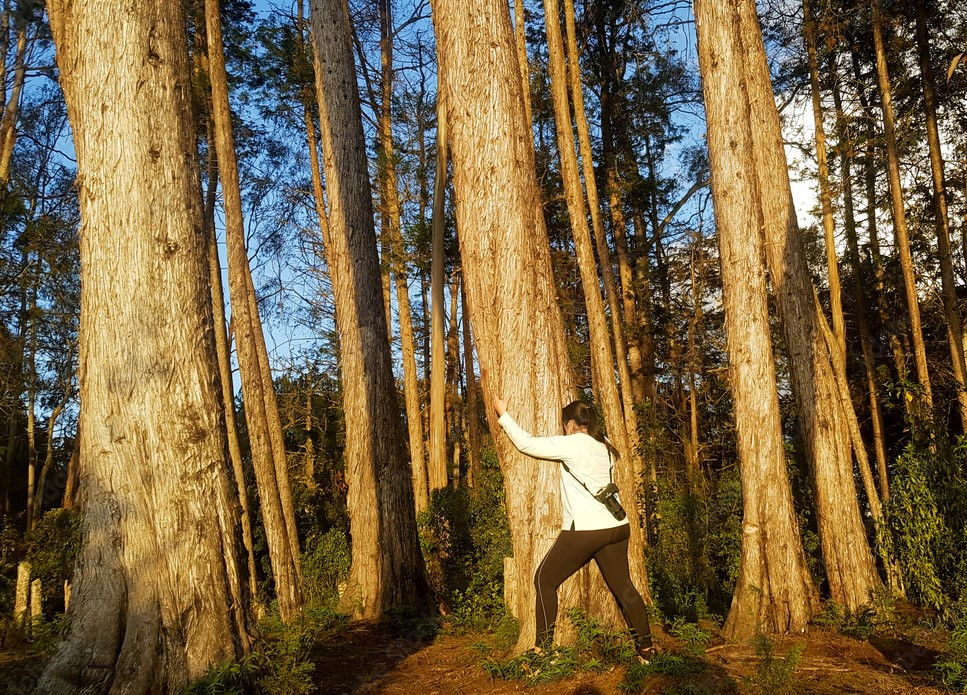

Parques del Rio
Es el lugar perfecto para relajarte. Aquí, encontrarás áreas verdes con bancas para hacer picnics y pasar tiempo con amigos y familia. También, el Pabellón del Río es genial para hacer ejercicio o simplemente disfrutar de su arquitectura moderna. Además, la Plaza de Niebla crea un ambiente fresco perfecto para actividades al aire libre. Desde sus 7 plataformas o balcones, puedes disfrutar de unas vistas impresionantes del Río y la ciudad de Medellín. No te pierdas la oportunidad de explorar la naturaleza y la cultura en este lugar único en Medellín. ¡Parques del Río tiene algo para todos los jóvenes aventureros!
- ¿Que hacer?
- ➣ Tomar el sol.
- ➣ Pasear con tu Mascota.
- ➣ Hacer deportes al aire libre.
- ➣ Tomarte una cerveza.
- ➣ En Diciembre puedes disfrutar de los alumbrados.
- ➣ Disfrutar de la gastronomia de sus 4 restaurantes.


 
